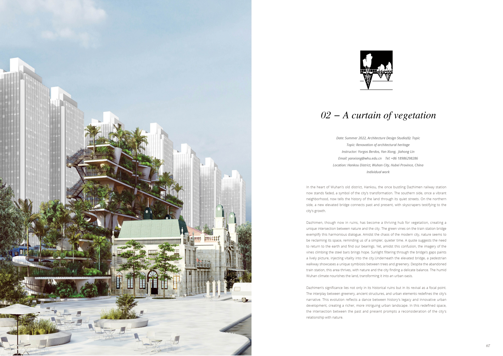

Historic Building Renovation
Historic building renovation project - the yardstick of time.
Dazhimen railway station in Wuhan’s Hankou district, once abandoned, is now an urban oasis where nature intertwines with history. Vines and greenery reclaim the ruins, creating a balance between past and present. This transformation highlights the city’s evolving relationship with nature amid urban growth.
